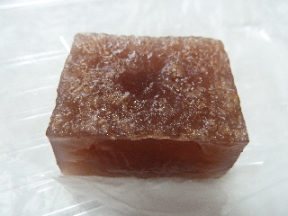
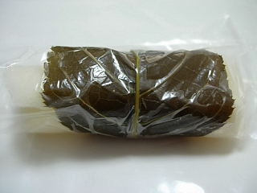
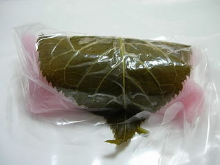
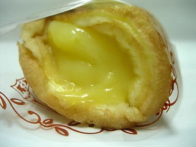
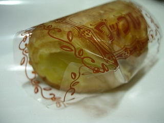
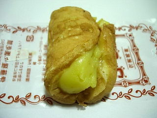

猩猩園の焼葛
2014/07/05
ようかんのような葛餅ですね。

葛の中に小豆が入っているので、味も羊羹に少しだけ近いです。
味は、甘さあっさり目で塩味が効いていました。
夏菓子ですね。
くずもちなので、食感は少し弾力がありました。
味も歯ごたえも良かったです。
島根県出雲市今市町542
2014/07/05
ようかんのような葛餅ですね。

葛の中に小豆が入っているので、味も羊羹に少しだけ近いです。
味は、甘さあっさり目で塩味が効いていました。
夏菓子ですね。
くずもちなので、食感は少し弾力がありました。
味も歯ごたえも良かったです。
2010/01/22
白い桜餅と赤い桜餅です。
白い桜餅にはピンク色の餡、赤い桜餅にはこし餡が入っていました。
くるくるっと巻いてあり、筒状になってました。


巻いてある分大きさが小さく、可愛く見えました。色合いも綺麗ですね。
生地が薄めなので、餡が多めで甘めでした。
よそのお店とはちょっと違ってていいですね。
2009/9/4
ふわっとしたワッフルにクリームがいっぱい入ってます。

ころんとしたワッフルですね。
クリームいっぱいですが、ちょっと小さいサイズなので重たくなく、美味しくいただきました。
2008/12/29
ちょっと小さくて、丸っこくて可愛いワッフルです。

小さいと他にも色々食べれていいですよね。大きくてずっしり系もいいですけど、お茶やコーヒーと一緒にいただく時は、これくらい小さいサイズの方が個人的には好きです。
ふんわりしたワッフルと爽やかなユズ風味のクリームがとても良く合っていておいしいですね。
2008/09/13
雲市今市町の伊藤猩々園のワッフルを食べました。
個人的には、猩々園といえばこのワッフルが一番に思い浮かびます。
和菓子屋さんなので、基本的にスポンジもクリームも和菓子屋さん的な味になってます。
和菓子屋さんのワッフルって、スポンジとクリームの両方ともが濃い味で、ちょっと複雑な味のものがよくあるんですけど、ここのはスポンジがふわふわで、味も軽いのでバランスがいいです。

クリームに柚子が入っていて、ちょっと独特の味でおいしいです。
個性的なお菓子は目立ちますね。
2005/5/7
出雲市今市町の猩々園さんのかしわ餅をいただきました。
お餅がもっちもっちしてて、お餅の味がしっかり味わえました。
白いのと、よもぎの2種類を食べましたが、私はよもぎのほうが美味しかったです。